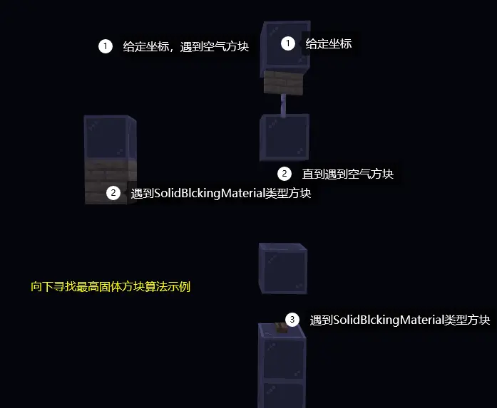
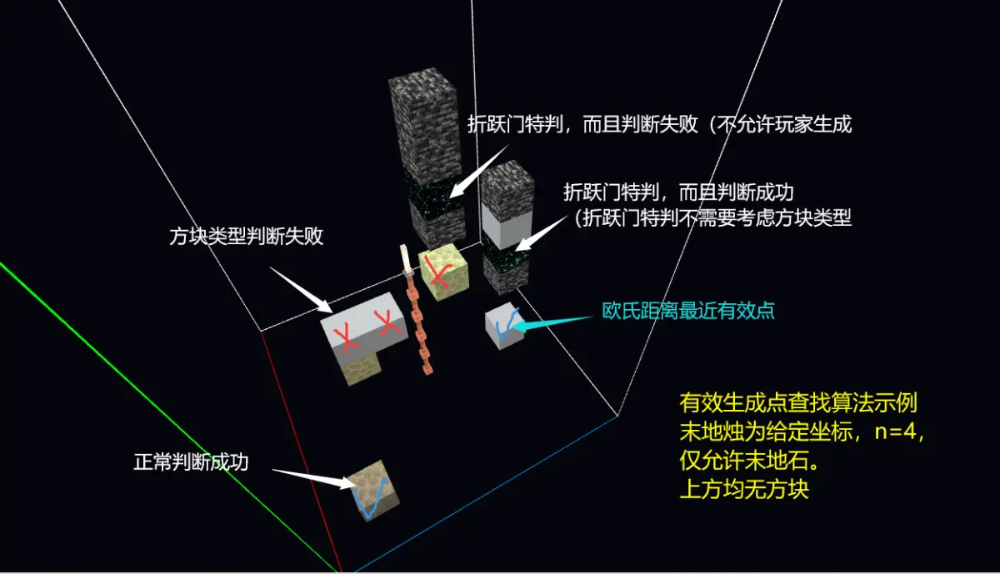
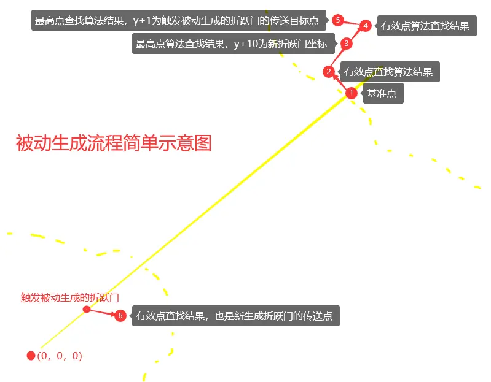
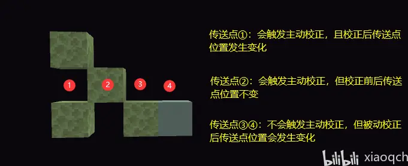
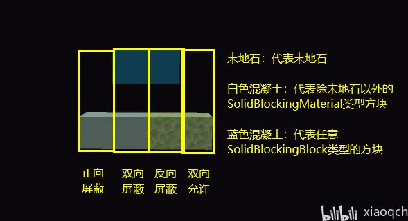
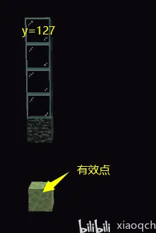
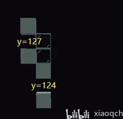
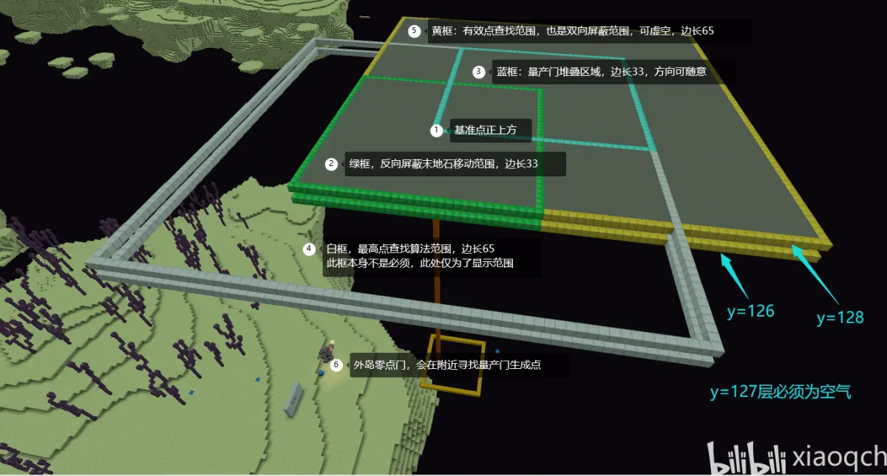
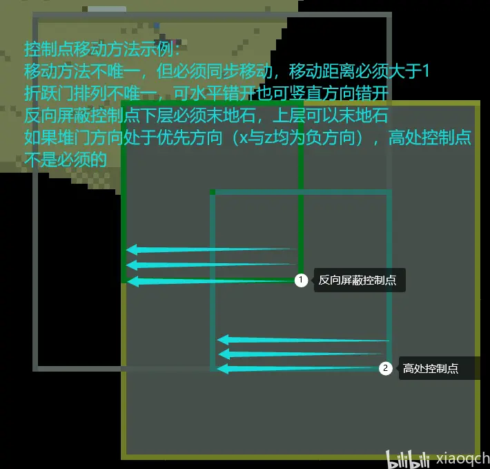
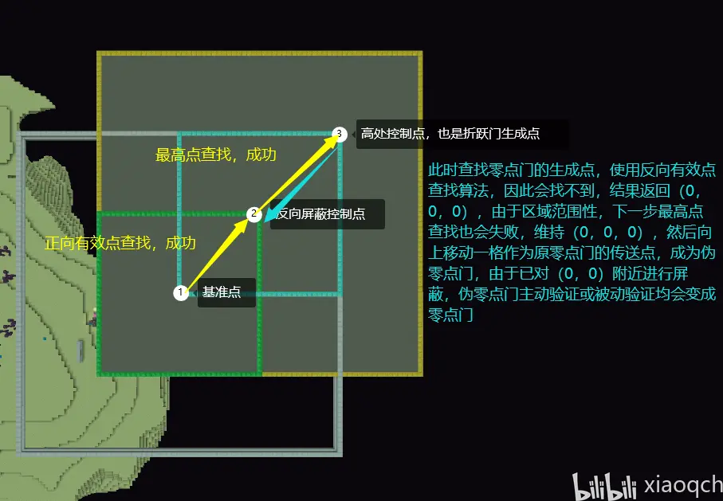

MCBE 折学（折跃门科学）研究
零、阅读前
⚠️本专栏过于硬核，在查看前请确保：
- 大脑已正确安装且处于正常运行状态
- 可以适当超频，但是请注意大脑状态，防止出现温度过高，血压不足等情况
- 如发现理解突然变慢甚至停止理解的情况，请暂停观看本专栏并进行充分休息，根据情况请考虑跳过部分内容
一、介绍
- 前人研究：mcbe末地折跃门总结
- 本文研究方法：分析BDS反汇编伪代码、编写LiteLoaderBDS插件与实际测试
- 适用范围：理论上 1.14.60.04 到最新版均适用，但目前只在1.18.32与1.17.10测试过，1.14.60更早的版本也可能适用
二、定义
- 零点门：传送点为（0，0，0）的折跃门
- 伪零点门：传送点为（0，1，0）的折跃门（因为容易被误认为零点门）
- 主岛门与外岛门：分别是位于主岛与外岛的门
- 量产门：通过人工控制的方法，大量生成的门
- 自传门：传送点位于外岛的外岛门（或者传送点位于内岛的内岛门）
- 互传门：传送点位于外岛的内岛门（或者传送点位于内岛的外岛门）
- 基准点：生成新折跃门中需要用到的点，与触发生成的折跃门和世界生成器（种子）相关
- 127（双层）屏蔽层：位于126和128的两层平台，后续介绍
- 折跃门特判：有效生成点查找算法中的特殊判断，后续介绍
- 欧氏距离：三维空间直线距离
- SolidBlckingMaterial：石制，木制等材料，具体看评论区
- SolidBlckingBlock：属于SolidBlckingMaterial中的完整方块？具体看评论区
三、关键算法介绍
- 基准点寻找算法（EndGatewayBlockActor::findExitPortal）
- ⚠️由于该算法存在浮点数转换产生的偏移，以及该返回值的重要性，此处仅用于理解，准确计算另外提供（具体看评论区）
- 向下查找最高固体方块算法（BlockSource::findNextTopSolidBlockUnder）此处命名中的固体方块不要太在意，仅命名

- 判断某方块上是否允许玩家生成
- 有效生成点查找算法（EndGatewayBlockActor::findValidSpawnAround）
- 以给的坐标为中心，向水平四方向延申n个方块（即边长为2n+1的正方形）为查找范围
- 在查早范围内逐个取点，并从y=127（包含）开始开始使用向下查找最高固体方块算法， 如果寻找失败，忽略该点，如果成功继续判断
- 判断该方块类型
- 从所有有效点中找出与给定的点欧氏距离最近的点，该点即查找结果，如果没有有效点，结果为（0，0，0）点（请记住这个点）

- 最高点查找算法
- 以给的坐标为中心，向水平四方向延申n个方块（即边长为2n+1的正方形）为查找范围
- 范围内逐个取点，从y=ymax（末地默认为255）开始向下逐个方块进行判断，直到找到SolidBlckingBlock类型方块
- 如果找到的是基岩且不允许基岩，跳过该点，否则设置该点为有效点
- 从有效点中找出y值最大的点，如果范围内值最大的点不唯一，则从y值最大的点筛选出x值最小的点，如果筛选结果仍然不唯一，则继续筛选出z值最小的点
四、折跃门关键逻辑

因为B站专栏中间插入图片会有奇奇怪怪的问题就放这里系列
- 任务队列当触发折跃门生成或验证时会将生成或验证请求添加到任务队列，末地每tick均会从任务队列中尝试取出一个请求，并执行该请求，请求的坐标在添加请求时确定
- 生成逻辑
- 验证与校正逻辑分为主动验证和被动验证，验证逻辑与已有折跃门传送点是否稳定，以及如何更改已有折跃门的传送点，也是折学研究的重点，主动验证和被动验证总是同时出现的，同时出现的两个验证互不干扰，以下将触发主动验证的门称为主动门，被主动门触发验证的门称为被动门，

是否会触发校正与校正后传送点是否发生变化举例
五、重要特性介绍
- 零点门产生
- 有效点屏蔽：如果有效生成点查找算法范围内找不到有效点，并且生成末地小岛后仍然找不到有效点，则不管主动验证校正还是被动验证校正，均会使被校正的折跃门变成零点门
- 被动校正：条件需要主动门与被动门传送点距离超出区域的范围，由于使用主动门区域来寻找被动门传送点附近的有效生成点会失败，被动门会变成零点门，常见四种情况是
- 人工放置：人工通过折跃门物品放置的门均为零点门
- 自传门产生
- 当外岛门触发被动生成时，由于被动生成逻辑的第6步，新生成的门很可能会是自传门，同时由于第4步，触发被动生成的外岛门也很可能会成为自传门
- 当（0，y，0）处的折跃门触发被动生成时，由于基准点寻找算法的特性，新生成的门必定是自传门（可能是主岛零点门，也是自传门的一种）
- 零点门刷门零点门加载方块实体数据时，会发出被动生成请求。由于各种因素，可能需要下线再上线才能触发，触发条件暂时不清楚，如需模拟，可使用结构方块加载零点门的方式触发
- 伪零点门产生被动生成第4步中，如果找不到有效点，会返回（0，0，0），第5步由于区域的范围性，会继续找不到有效点，维持（0，0，0），然后将该点坐标向上移动一格设置为触发被动生成的的折跃门的传送点，该门变成伪零点门
- 127屏蔽层折学研究的重大成果之一，让工程中难以稳定零点门成为可能，让外岛折跃门堆门工程早期脱离主岛折跃门定义，根据生成逻辑中两次有效生成点查找算法的使用顺序，将仅允许末地石的有效生成点查找算法定义为正向查找，将非仅允许末地石的有效生成点查找算法定义为反向查找，y=127是有效生成点查找算法开始的高度，由于反向查找相比正向查找多了一步玩家空间判断，使得126~128层成为非常特殊的层，下面具体对各种屏蔽进行介绍
- 正向屏蔽反向查找会成功，正向查找会失败的屏蔽，简单的在126或以下放置非末地石的SolidBlckingMaterial类型的方块即可
- 反向屏蔽正向查找会成功，反向查找会失败的屏蔽，通过127层留空气，126层放置末地石，128层放置SolidBlckingBlock类型方块，正向查找时会找到126层的末地石，查找成功，反向查找时也会找到126层的末地石，但是由于128层的方块阻挡玩家生成，所以会查找失败
- 双向屏蔽正向查找与反向查找均会失败的屏蔽，通过127层留空，126层放置SolidBlckingMaterial类型的方块，128层放置SolidBlckingBlock类型方块，两种查找均会失败，另一种双向屏蔽，在126或以下放置基岩，并防止折跃门特判成功即可或者将方块全清空，

- 忽略某位置方块向下查找此处略过是对于有效生成点查找算法来讲的，通过在该点堆任意方块到127层，由于向下查找最高固体方块算法特性，该点方块将会被忽略直到遇到空气

跳过基岩寻找到下方的末地石
- 127屏蔽层下移由于有效生成点查找算法特性，如果127层不是空气，会首先向下查找到空气，再进行查找，因此只需下移屏蔽层并在其上方补充任意方块到127即可，（如果补充方块是最高点查找算法会忽略的方块会有额外用途，如水方块与流动水（待验证），铁砧）

127屏蔽层下移至124
- 折跃门特判有效生成点查找算法中遇到折跃门结构时会继续往下进行判断，且会无视是否仅允许末地石参数寻找SolidBlockingMaterial类型方块
- 有效零点通过特殊方法使得（0，0，0）点成为有效生成点查找算法能查找到的点，一个比较简单的方法末地祭坛向上堆任意方块至127高度（包含），坐标（0，0，0）处放置末地石，并保证坐标（0，0，0）到（0，127，0）之间只穿过一次连续空气方块注：此方法未进行详细测试，不保证此方法维持的零点门的稳定性
- 命名物品人工门变自传门如果通过被命名的折跃门物品放置的折跃门，会在短时间内触发被动生成，然后再短时间内触发验证，导致放出来显示不是零点门的现象，简单验证，往自己身上放置折跃门，会瞬间被传送至零点，再次进入该折跃门，会被传送至附近的点，暂未详细研究
六、应用：通用双层屏蔽折跃门堆叠框架

框架示意图

控制点移动示例

原理简单示意
- 寻找一个外岛折跃门（最好位于外岛向内岛的边界附近，一般选用与主岛门一起生成的外岛门
- 寻找该门的基准点，以该点为基础搭建此框架
- 预先设置好反向屏蔽控制点与高点方块，
- 在（0，0）处做好维持零点门稳定的准备，如33*33单层屏蔽（不能位于或高于127）或有效零点方案
- 使外岛门转成零点门，如传送点坐标为中心33*33范围单层屏蔽，屏蔽层必须高于原传送点坐标，注意折跃门特判与侧向挤压
- 想办法让外岛零点门反复加载数据（如退出重进）
- 当一个位置堆叠至无法继续堆叠时，移动控制点，重复操作
七、其他补充
- 基准点寻找
- 基准点验证
- 堆门过程中量产门的生成越来越慢由于每个折跃门加载时均会添加验证请求，零点门加载时会添加生成请求，是同一队列的，并且每tick只会执行一个任务，因此当折跃门越来越多是，生成请求排队的时间也会越来越长（后期可能会需要等待一分钟以上）解决方法，上线时玩家的加载范围内尽量避开量产门区域
- 移动基准点来扩大折跃门的堆叠范围通过改变自传门坐标即可做到，但是由于框架外生成自传门相对麻烦，基准点和初始地形相关，以及已有区域可堆叠数量已经足够大等原因，一般不会这么做
- 改变量产门生成初始高度参考屏蔽层下移
- 传送目标高于127的传送门传送门被动生成的第5步，使用的是最高点查找算法确定的触发被动生成的传送门传送点，因此此时该门传送点最高可255，但是一般该点不稳定，主动验证会进行校正，维持该点稳定的方法，在传送点改变前，把该点方块往下移动一格，并防止该传送门的被动验证即可维持稳定
- 关于本文内容适用范围通过对比BDS 1.14.60.04与BDS 1.18.32.02反汇编伪代码，相关内容均未发现变化，但不排除又未发现的或者从其他联系不大的地方影响的，以实际版本为主，另外服务器与客户端应该没区别太大
八、鸣谢
感谢 LiteLDev团队 提供LiteLoader插件加载器，与大量API极大方便了测试插件的开发，
感谢 和风LeftSoftwind、野生的无产诗人、凉辰Liang00Chen 的讨论和纠错
感谢 和风LeftSoftwind 对1.17.10版本进行测试
感谢 MCBE开发交流群 其他参与讨论的所有小可爱们
最后，如果发现本文内容有误，欢迎指出